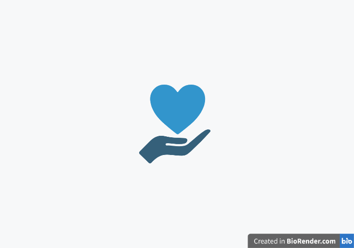

Atingir a cobertura universal de saúde

A meta 3.8 dos Objetivos de Desenvolvimento Sustentável (ODS) estabelecida pela Organização das Nações Unidas (ONU) tem como objetivo atingir a cobertura universal de saúde até 2030. Isso inclui diversos elementos essenciais, tais como a proteção contra riscos financeiros associados à saúde, o acesso a serviços de saúde essenciais de qualidade e a disponibilidade de medicamentos e vacinas seguros, eficazes e acessíveis para todos.
Essa meta reconhece a importância de garantir que todos, independentemente de sua condição socioeconômica, tenham acesso equitativo a serviços de saúde. Aqui estão alguns pontos-chave relacionados à meta 3.8:
Proteção contra Riscos Financeiros: O acesso à saúde não deve levar a ônus financeiros significativos para os indivíduos ou famílias. A implementação de sistemas de seguro saúde e mecanismos de proteção financeira é essencial para evitar que o custo dos cuidados de saúde leve a dificuldades econômicas.
Acesso a Serviços de Saúde Essenciais: A cobertura universal de saúde implica garantir que todas as pessoas tenham acesso a serviços de saúde essenciais, independentemente de sua localização geográfica ou condição socioeconômica. Isso inclui serviços de atenção primária, tratamento para doenças crônicas, cuidados preventivos, serviços de emergência e outras intervenções essenciais.
Medicamentos e Vacinas Acessíveis e de Qualidade: A disponibilidade de medicamentos e vacinas seguros, eficazes, de qualidade e acessíveis é crucial para o tratamento e prevenção de doenças. Isso envolve a promoção da pesquisa e desenvolvimento de medicamentos acessíveis, a implementação de políticas que reduzam os preços dos medicamentos e a garantia de acesso a vacinas essenciais para todas as comunidades.
Equidade e Inclusão: A cobertura universal de saúde deve ser alcançada de maneira equitativa, garantindo que as populações mais vulneráveis e marginalizadas tenham acesso igualitário aos serviços de saúde. Isso inclui um foco especial nas necessidades de grupos como mulheres, crianças, idosos, pessoas com deficiência e comunidades desfavorecidas.
Sistemas de Saúde Fortes: A implementação bem-sucedida da cobertura universal de saúde depende de sistemas de saúde robustos. Isso inclui o treinamento e retenção de profissionais de saúde, o desenvolvimento de infraestrutura de saúde, a gestão eficiente de recursos e a aplicação de tecnologias da informação na prestação de cuidados de saúde.
O alcance da cobertura universal de saúde é uma aspiração ambiciosa que exige colaboração entre governos, organizações internacionais, setor privado e sociedade civil. A promoção da saúde como um direito fundamental, aliada ao compromisso de superar desigualdades no acesso aos serviços de saúde, contribuirá não apenas para a melhoria da saúde global, mas também para o alcance de metas mais amplas de desenvolvimento sustentável.